Filmmaker in Brussel. Ik maak video's voor wie iets te zeggen heeft, en help graag bij uitzoeken wát.
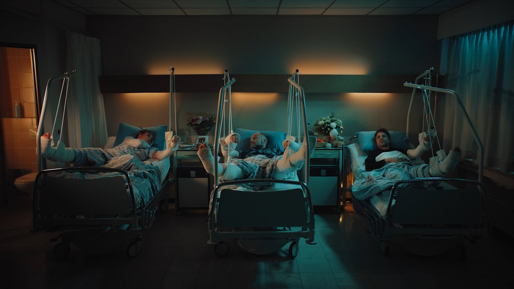
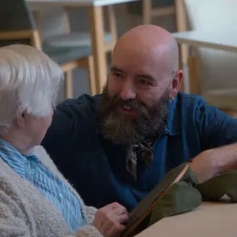
Kunst & Ouderen · Camera & montage
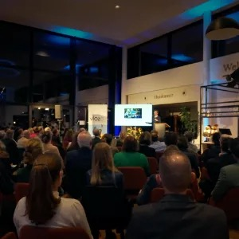
Immuniteit en preventie in de ouderenzorg · Camera & montage
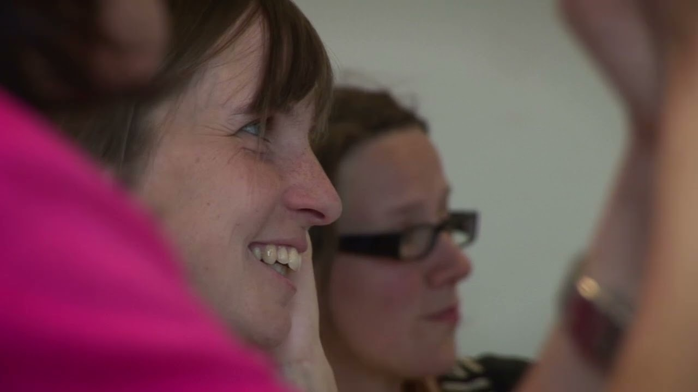
Ons verhaal · Camera & montage
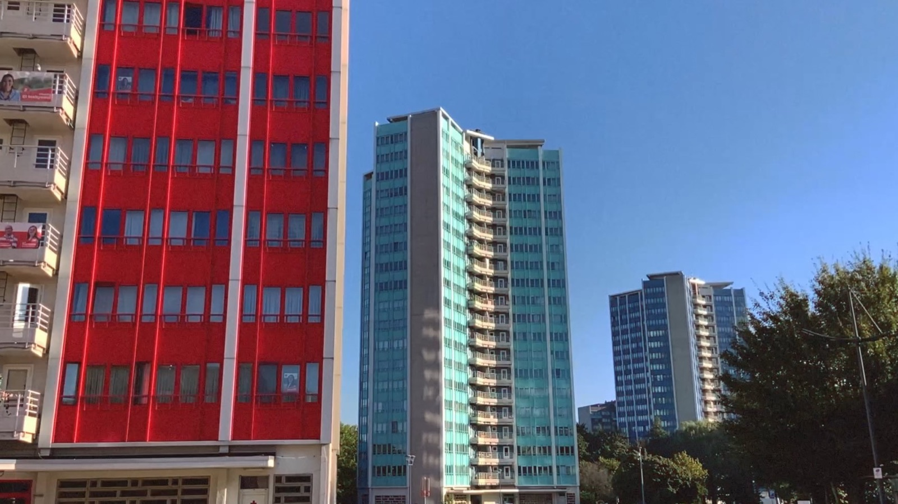
Circus Chabri · Camera & montage
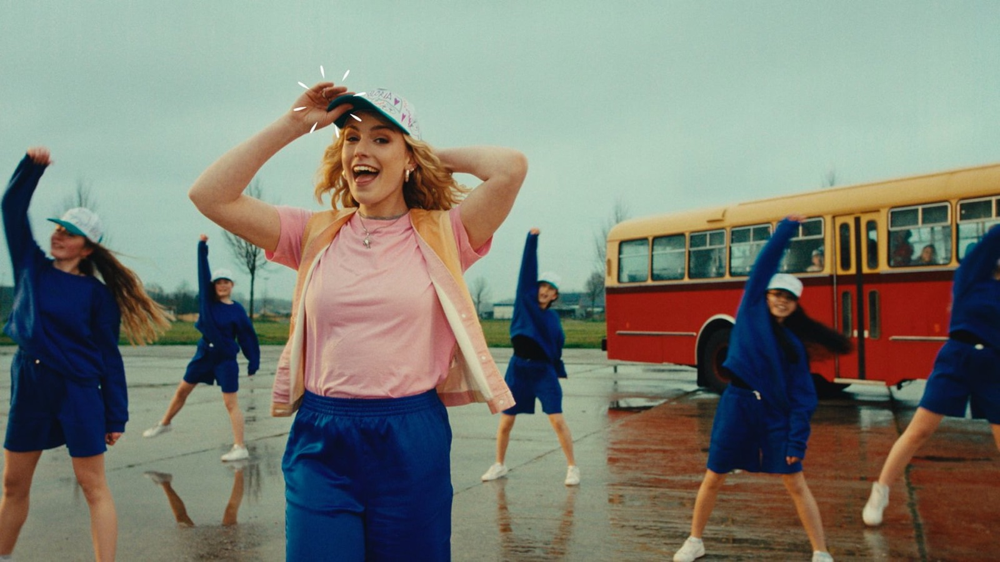
Superheld · Regie
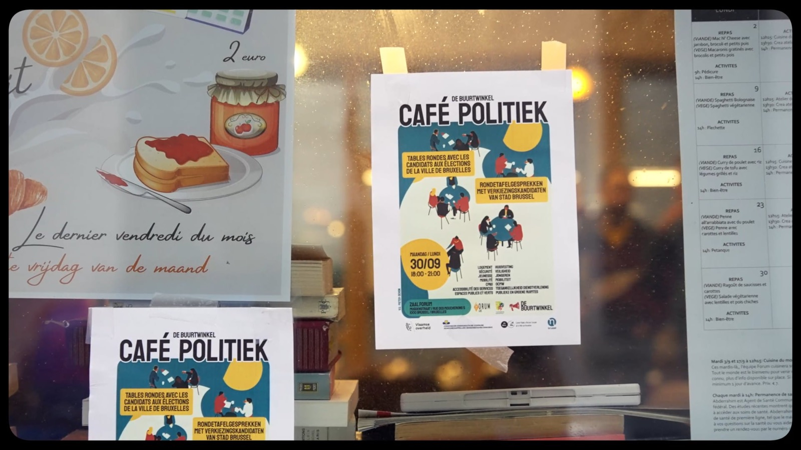
Café Politiek · Camera & montage
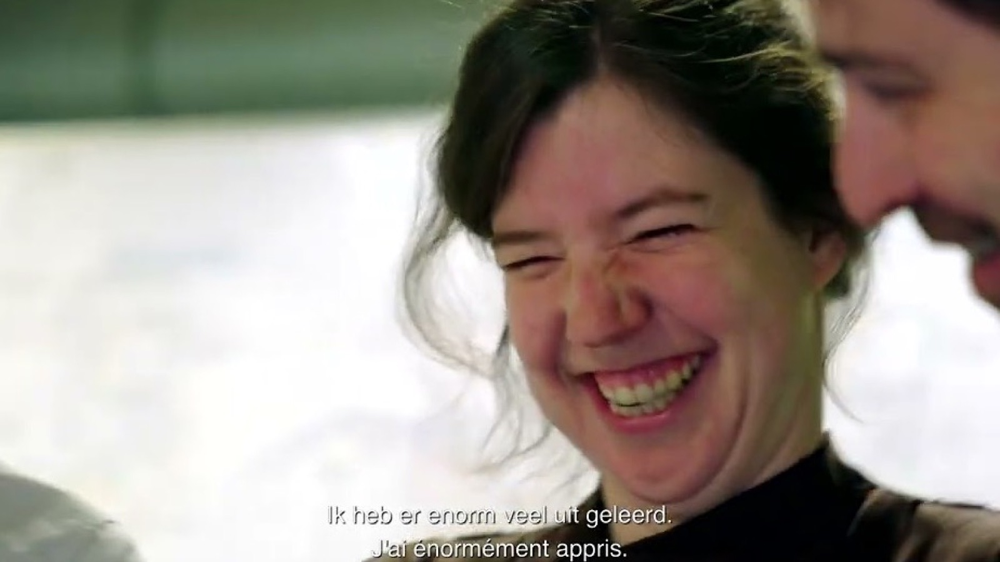
Mission (Im)Possible — bedrijfsdocumentaire · Regie & montage
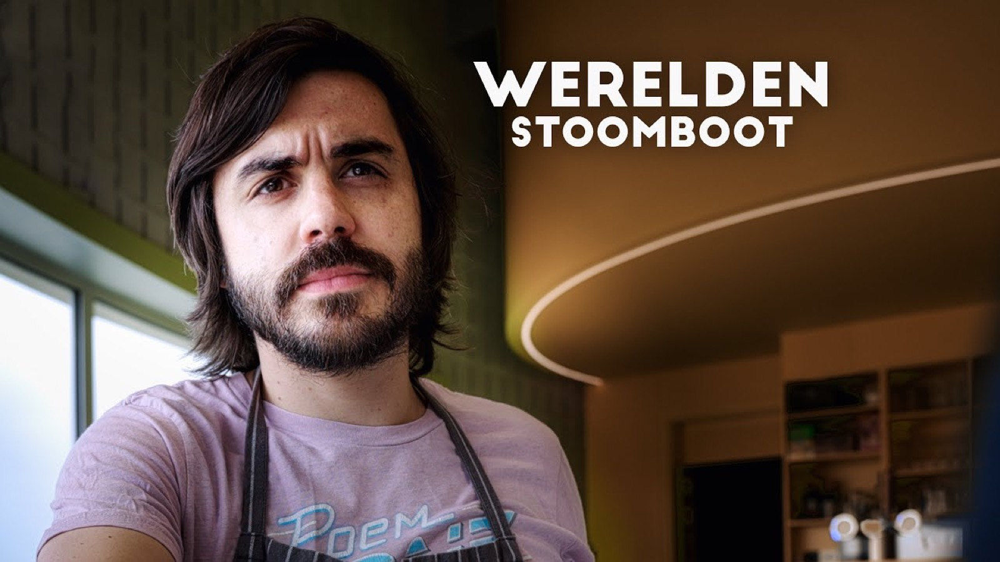
Werelden — naar Rian Visser · Regie, camera & montage
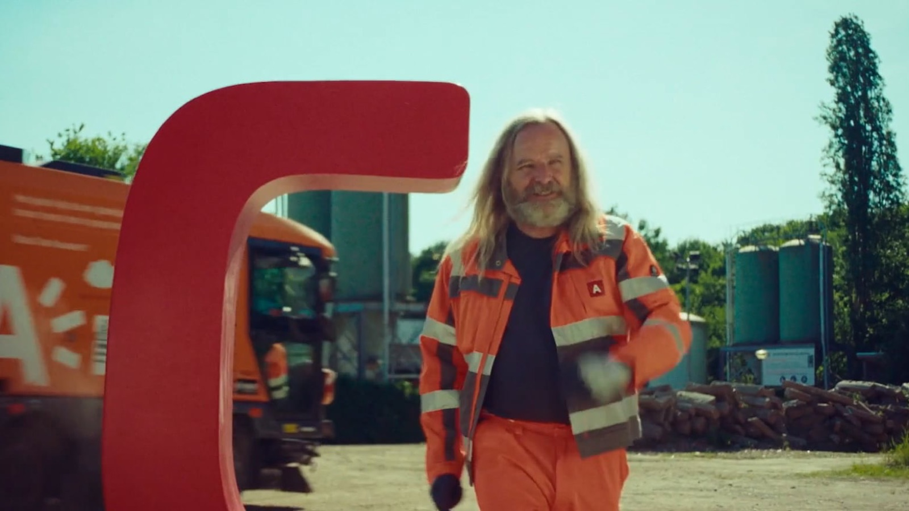
Rijbewijs C — wervingsspot · Regie
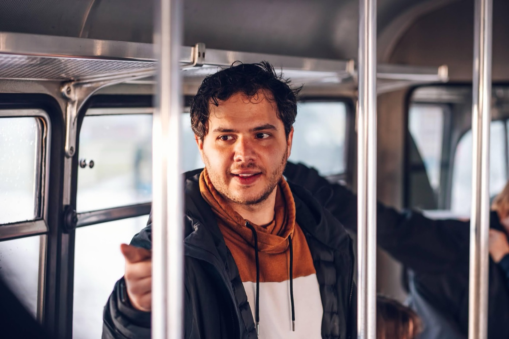
Filmmaker in Brussel, opgeleid aan het RITCS.
Na jaren reclame en televisie bij Woestijnvis, Shelter en De Machine werk ik nu voor een divers clubje opdrachtgevers: van Audi en de Koning Boudewijnstichting tot vzw's waar je nog nooit van gehoord hebt.
Liefst kort op de bal: weinig vergaderingen, een helder plan, en een film die doet wat hij moet doen. Regie, camera en montage doe ik meestal zelf — waar nodig komen er mensen bij.
Een idee, een vraag, of gewoon benieuwd wat het zou kosten? Stuur een mail.
info@thijsdeblock.com